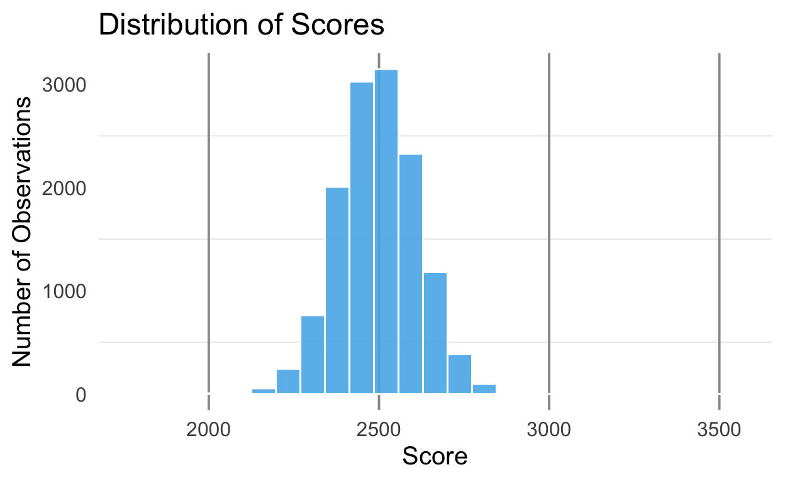
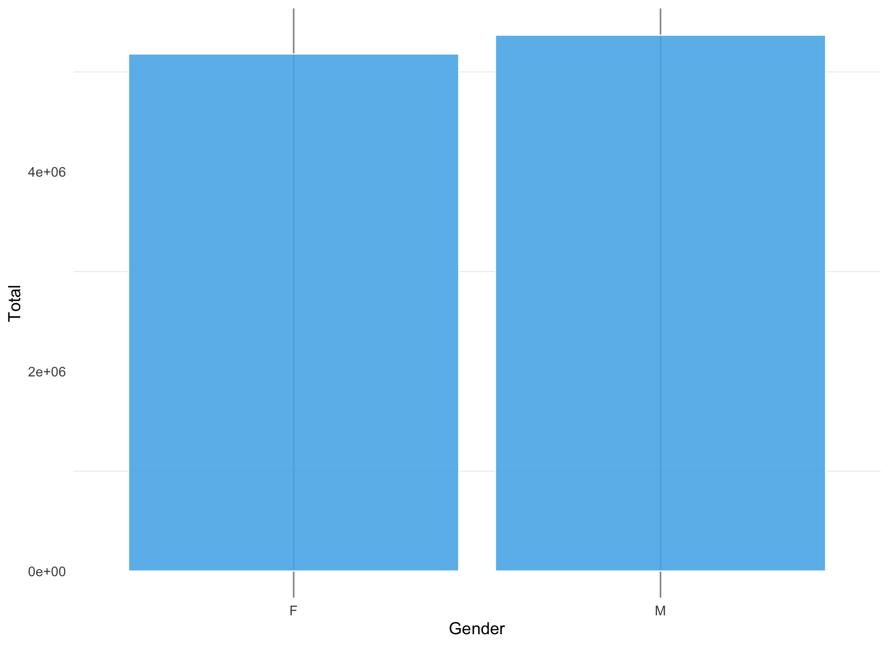
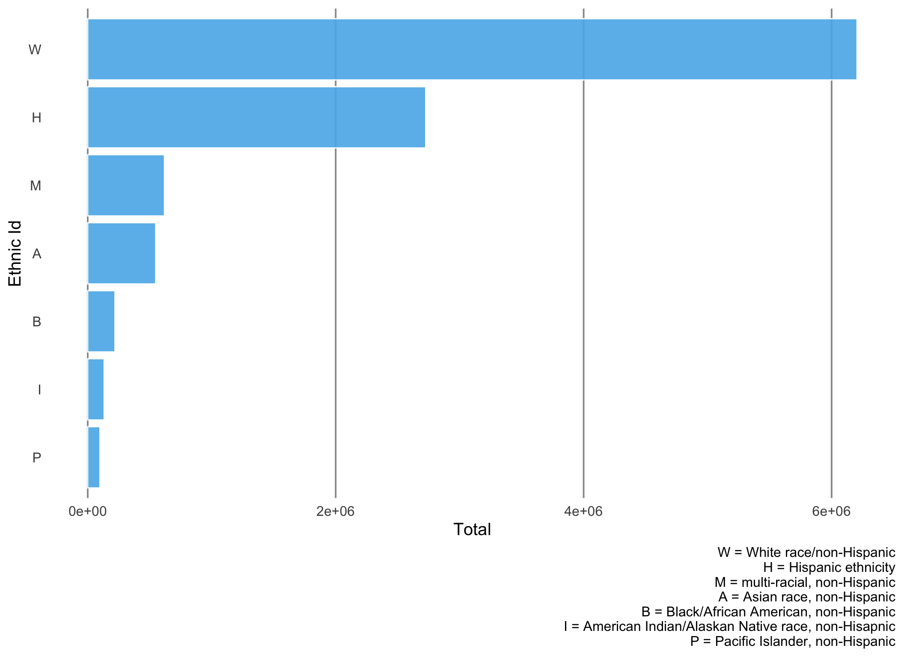
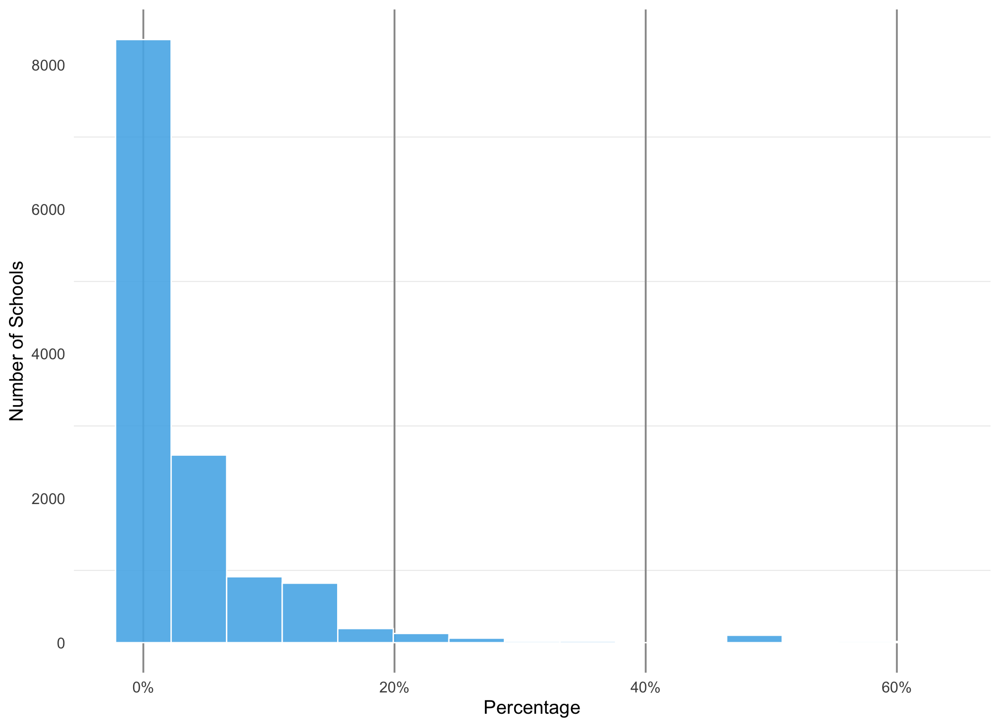
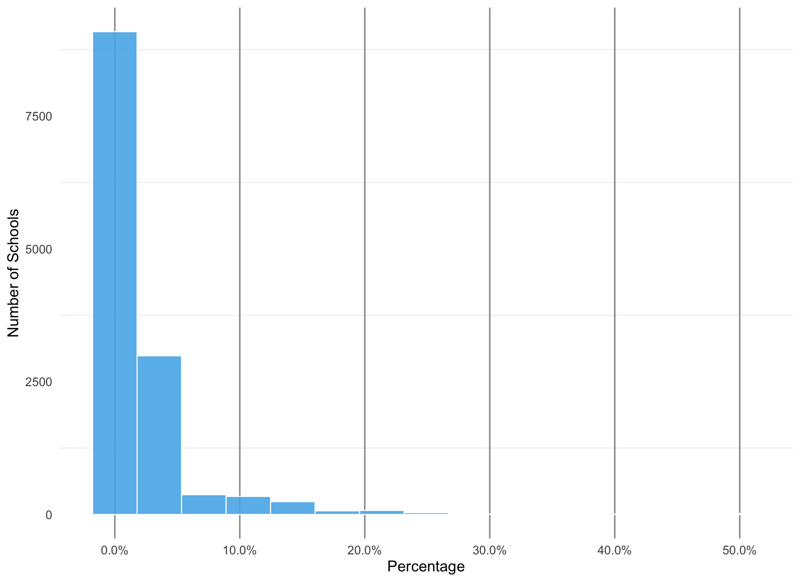
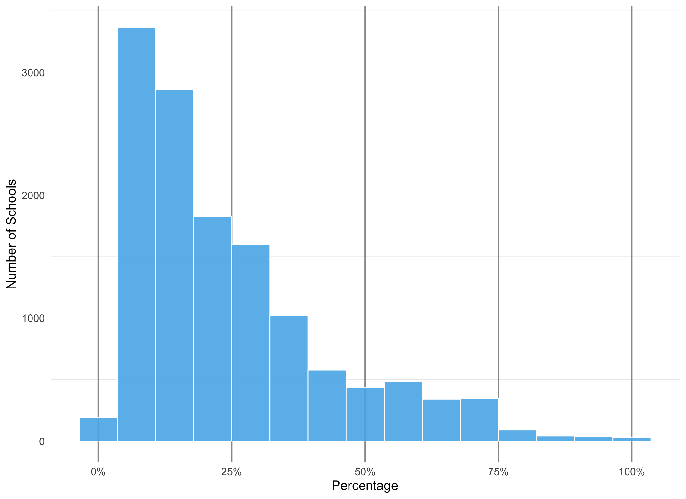
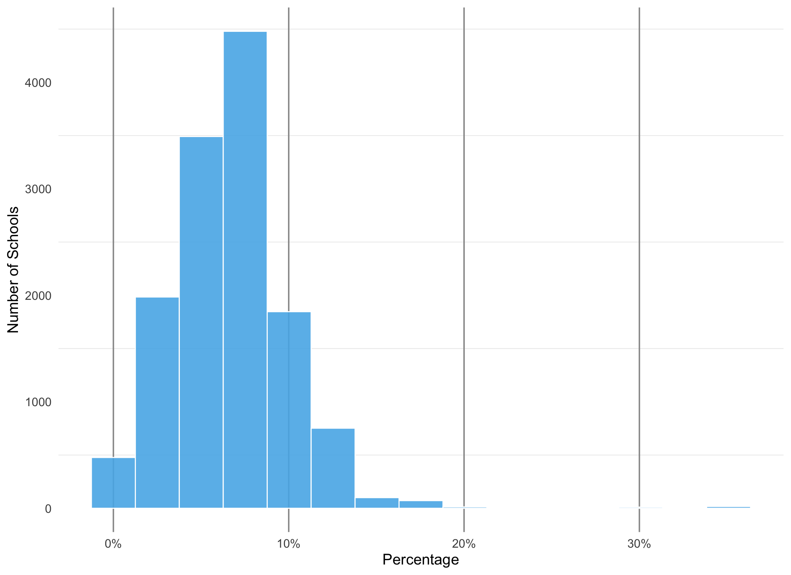
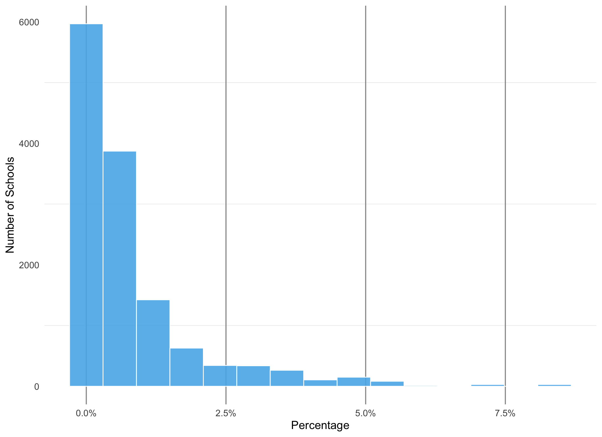
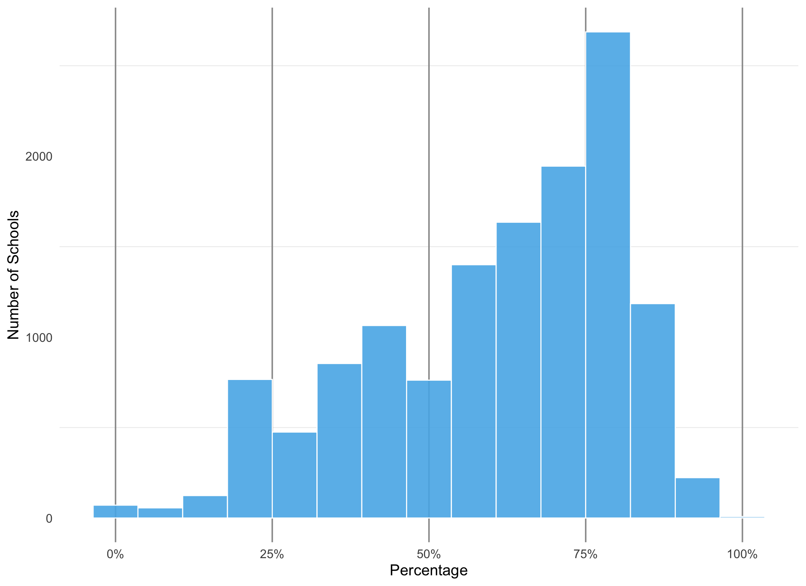
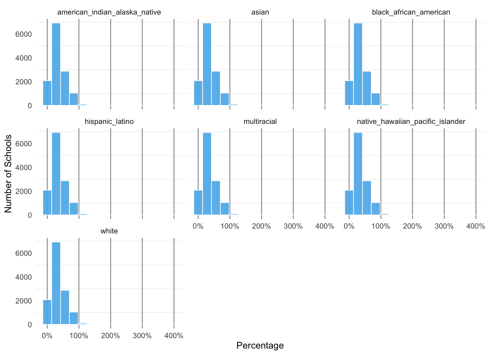

Description of the data
The original training dataset included 39 variables. We randomly sampled 7% of this dataset to reduce the total to 13,260 observations. To expand the number of predictors in our models, the following steps were taken:
FRL(6 variables) andstudent_count(2 variables) imported and joined together byncesschvariable.Two variables created in the
FRLdataset:- proportion of students who qualify for free and reduced lunch
- proportion of students who qualify for reduced price lunch
Ethnicitiesdata importedThe original 7% sample of the
trainingdata was joined with theFRLandEthnicitiesdatasets to increase the total number of variables to 55 across `3,263 observations.
Score Variable
Were interested in predicting the students score based on their attributes. The range of the outcome variable is as follows:
Summary
Min. 1st Qu. Median Mean 3rd Qu. Max.
1821 2420 2497 2498 2575 3550 Distribution
The distribution of of the 7% random sample of scores is a normal distribution. Additionally, there are no apparent skew or outliers.

Description of the remaining 54 variables
ID Variables
| Variable ID | Variable Description |
|---|---|
id |
Student identifier |
attnd_dist_inst_id |
Institution identifier for the Attending District |
attnd_schl_inst_id |
Institution identifier for the Attending School |
partic_dist_inst_id |
Institution identifier for the Attending District |
partic_schl_inst_id |
Institution identifier for the Attending School |
ncessch |
School id number |
Categorical Predictor Variables
| Variable ID | Variable Description |
|---|---|
gndr |
Student gender |
ethnic_cd |
Student ethnicity |
enrl_grd |
Student grade level |
calc_admn_cd |
Code describing special circumstances affecting test administration |
tst_bnch |
Benchmark level of the administered test |
tst_dt |
Test date |
migrant_ed_fg |
Indicates student participation in a program designed to assure that migratory children receive full and appropriate opportunity to meet the state academic content and student academic achievement standards |
ind_ed_fg |
Indicates student participation in a program designed to meet the unique educational and culturally related academic needs of American Indians |
sp_ed_fg |
Indicates student participation in an Individualized Education Plan (IEP/IFSP) |
tag_ed_fg |
Indicates student participation in a Talented and Gifted program |
econ_dsvntg |
Indicates student eligibility for a Free or Reduced Lunch program |
ayp_lep |
Indicates a student who received services or was eligible to receive services in a Limited English Proficient program |
stay_in_dist |
Indicates that the student has been enrolled for more than 50% of the days in the school year as of the first school day in May at the district where the student is resident on the first school day in May |
stay_in_schl |
Indicates that the student has been enrolled for more than 50% of the days in the school year as of the first school day in May at the school where the student is resident on the first school day in May |
dist_sped |
Indicates that the student was enrolled in a district special education program during the school year and received general education classroom instruction for less than 40% of the time as of the first school day in May |
trgt_assist_fg |
Flag indicating the record is included in Title 1 Targeted Assistance for the Adequate Yearly Progress (AYP) school performance calculations |
ayp_dist_partic |
Flag indicating the record is included in the denominator of Adequate Yearly Progress (AYP) district participation calculations |
ayp_schl_partic |
Flag indicating the record is included in the denominator of Adequate Yearly Progress (AYP) school participation calculations |
ayp_dist_prfrm |
Flag indicating the record is included in the denominator of Adequate Yearly Progress (AYP) district performance calculations |
ayp_schl_prfrm |
Flag indicating the record is included in the denominator of Adequate Yearly Progress (AYP) school performance calculations |
rc_dist_partic |
Flag indicating the record is included in the denominator of Report Card (RC) district participation calculations |
rc_schl_partic |
Flag indicating the record is included in the denominator of Report Card (RC) school participation calculations |
rc_dist_prfrm |
Flag indicating the record is included in the denominator of Report Card (RC) district performance calculations |
rc_schl_prfrm |
Flag indicating the record is included in the denominator of Report Card (RC) school participation calculations |
lang_cd |
Test language |
tst_atmpt_fg |
Code describing whether the test was attempted |
grp_rpt_dist_partic |
Flag indicating the record is included in the denominator of Group Report district participation calculations |
grp_rpt_schl_inst_id |
Flag indicating the record is included in the denominator of Group Report school participation calculations |
grp_rpt_dist_prfrm |
Flag indicating the record is included in the denominator of Group Report district performance calculations |
grp_rpt_schl_prfrm |
Flag indicating the record is included in the denominator of Group Report school participation calculations |
sch_name |
School name |
Gender Distribution

Ethnicity Distribution

Continuous Predictor Variables
| Variable ID | Variable Description |
|---|---|
lat |
School latitude |
lon |
school longitude |
p_american_indian_alaska_native |
Percentage of students identified as American Indian and/or Alaska Native |
p_asian |
Percentage of students identified as Asian |
p_native_hawaiin_pacific_islander |
Percentage of students identified as Native Hawaiin and/or Pacific Islander |
p_black_african_american |
Percentage of students identified as black and/or African American |
p_hispanic_latino |
Percentage of students identified as Hispanic and/or Latino |
p_white |
Percentage of students identified as white |
p_multiracial |
Percentage of students identified as multiracial |
free_lunch_qualified |
Total number of students who qualify for free lunch |
reduced_price_lunch_qualified |
Total number of students who qualify for reduced price lunch |
missing |
|
not_applicable |
|
no_category_codes |
|
n |
Total number of students enrolled in the school |
prop_frl |
Proportion of students who qualify for free lunch |
prop_reduced_lunch |
Proportion of students who qualify for reduced price lunch |
Distribution of Ethnicities
American Indian/Alaskan Native race, non-Hispanic

Asian, non-Hispanic

Black/African American, non-Hispanic

Hispanic

Multi-racial, non-Hispanic

Pacific Islander race, non-Hispanic

White

Distribution of Free and Reduced Lunch Status
Distribution of the proportion of students who qualify for free lunch

Distribution of the proportion of students who qualify for reduced price lunch

id gndr ethnic_cd
Min. : 22 Length:13263 Length:13263
1st Qu.: 62804 Class :character Class :character
Median :125333 Mode :character Mode :character
Mean :125772
3rd Qu.:188416
Max. :252568
attnd_dist_inst_id attnd_schl_inst_id enrl_grd calc_admn_cd
Min. :1894 Min. : 1 Min. :3.000 Mode:logical
1st Qu.:2039 1st Qu.: 506 1st Qu.:4.000 NA's:13263
Median :2142 Median : 942 Median :5.000
Mean :2123 Mean :1373 Mean :5.471
3rd Qu.:2190 3rd Qu.:1300 3rd Qu.:7.000
Max. :4131 Max. :5392 Max. :8.000
tst_bnch tst_dt migrant_ed_fg
Length:13263 Length:13263 Length:13263
Class :character Class :character Class :character
Mode :character Mode :character Mode :character
ind_ed_fg sp_ed_fg tag_ed_fg
Length:13263 Length:13263 Length:13263
Class :character Class :character Class :character
Mode :character Mode :character Mode :character
econ_dsvntg ayp_lep stay_in_dist
Length:13263 Length:13263 Length:13263
Class :character Class :character Class :character
Mode :character Mode :character Mode :character
stay_in_schl dist_sped trgt_assist_fg
Length:13263 Length:13263 Length:13263
Class :character Class :character Class :character
Mode :character Mode :character Mode :character
ayp_dist_partic ayp_schl_partic ayp_dist_prfrm
Length:13263 Length:13263 Length:13263
Class :character Class :character Class :character
Mode :character Mode :character Mode :character
ayp_schl_prfrm rc_dist_partic rc_schl_partic
Length:13263 Length:13263 Length:13263
Class :character Class :character Class :character
Mode :character Mode :character Mode :character
rc_dist_prfrm rc_schl_prfrm partic_dist_inst_id
Length:13263 Length:13263 Min. :1894
Class :character Class :character 1st Qu.:2041
Mode :character Mode :character Median :2142
Mean :2124
3rd Qu.:2190
Max. :4131
NA's :44
partic_schl_inst_id lang_cd tst_atmpt_fg
Min. : 1 Length:13263 Length:13263
1st Qu.: 506 Class :character Class :character
Median : 942 Mode :character Mode :character
Mean :1375
3rd Qu.:1300
Max. :5392
NA's :44
grp_rpt_dist_partic grp_rpt_schl_partic grp_rpt_dist_prfrm
Length:13263 Length:13263 Length:13263
Class :character Class :character Class :character
Mode :character Mode :character Mode :character
grp_rpt_schl_prfrm score ncessch
Length:13263 Min. :1821 Min. :4.100e+11
Class :character 1st Qu.:2420 1st Qu.:4.103e+11
Mode :character Median :2497 Median :4.108e+11
Mean :2498 Mean :4.107e+11
3rd Qu.:2575 3rd Qu.:4.111e+11
Max. :3550 Max. :4.114e+11
NA's :202
lat lon sch_name
Min. :42.01 Min. :-124.5 Length:13263
1st Qu.:44.25 1st Qu.:-123.0 Class :character
Median :45.27 Median :-122.8 Mode :character
Mean :44.79 Mean :-122.5
3rd Qu.:45.50 3rd Qu.:-122.5
Max. :46.18 Max. :-116.9
NA's :218 NA's :218
p_american_indian_alaska_native p_asian
Min. :0.00000 Min. :0.00000
1st Qu.:0.00265 1st Qu.:0.00551
Median :0.00583 Median :0.01375
Mean :0.01227 Mean :0.03919
3rd Qu.:0.01174 3rd Qu.:0.03846
Max. :0.88284 Max. :0.61931
NA's :10 NA's :10
p_native_hawaiian_pacific_islander p_black_african_american
Min. :0.000000 Min. :0.00000
1st Qu.:0.000000 1st Qu.:0.00371
Median :0.003540 Median :0.00926
Mean :0.007837 Mean :0.02188
3rd Qu.:0.009500 3rd Qu.:0.02116
Max. :0.083800 Max. :0.49846
NA's :10 NA's :10
p_hispanic_latino p_white p_multiracial
Min. :0.0000 Min. :0.0000 Min. :0.00000
1st Qu.:0.1008 1st Qu.:0.4533 1st Qu.:0.04474
Median :0.1850 Median :0.6538 Median :0.06673
Mean :0.2439 Mean :0.6069 Mean :0.06680
3rd Qu.:0.3299 3rd Qu.:0.7734 3rd Qu.:0.08472
Max. :1.0000 Max. :1.0000 Max. :0.35088
NA's :10 NA's :10 NA's :10
free_lunch_qualified reduced_price_lunch_qualified missing
Min. : 0.0 Min. : 0.00 Min. :0
1st Qu.:122.0 1st Qu.: 22.00 1st Qu.:0
Median :211.0 Median : 36.00 Median :0
Mean :228.6 Mean : 39.57 Mean :0
3rd Qu.:309.0 3rd Qu.: 52.00 3rd Qu.:0
Max. :813.0 Max. :132.00 Max. :0
NA's :202 NA's :202 NA's :202
not_applicable no_category_codes n prop_frl
Min. :0 Min. : 0.0 Min. : 12.0 Min. :0.0000
1st Qu.:0 1st Qu.:152.0 1st Qu.: 420.0 1st Qu.:0.1916
Median :0 Median :248.0 Median : 599.0 Median :0.2921
Mean :0 Mean :268.2 Mean : 807.3 Mean :0.3562
3rd Qu.:0 3rd Qu.:357.0 3rd Qu.:1165.0 3rd Qu.:0.4918
Max. :0 Max. :920.0 Max. :3144.0 Max. :4.3823
NA's :202 NA's :202 NA's :202 NA's :202
prop_reduced_lunch
Min. :0.00000
1st Qu.:0.03633
Median :0.05385
Mean :0.06072
3rd Qu.:0.07481
Max. :1.20833
NA's :202 Split and Resample
Preprocess
We processed the varibales in the dataset through the following steps:
- All id variables are assigned to id role, which are not used as predictors
- All nominal varibales, except the outcome, with a missing value in a factor level are assigned to unknown level.
- All numeric variables with a missing value are imputed by its median value.
- Predictor variables with nearly no variation are removed
- All nominal varibales, except id variables and outcomes, are dummy coded
- After dummny coded, all nominal variables with nearly no variation are removed.
Data Recipe
Inputs:
role #variables
id vars 6
outcome 1
predictor 48
Training data contained 9949 data points and 9949 incomplete rows.
Operations:
Variable mutation for tst_dt [trained]
Novel factor level assignment for gndr, ethnic_cd, ... [trained]
Unknown factor level assignment for gndr, ethnic_cd, ... [trained]
Sparse, unbalanced variable filter removed calc_admn_cd, ... [trained]
Median Imputation for enrl_grd, tst_dt, lat, ... [trained]
Dummy variables from gndr, ethnic_cd, tst_bnch, sp_ed_fg, ... [trained]
Sparse, unbalanced variable filter removed gndr_new, ... [trained]
Interactions with lat:lon [trained]# A tibble: 9,949 x 37
id attnd_dist_inst attnd_schl_inst enrl_grd tst_dt
<dbl> <dbl> <dbl> <dbl> <dbl>
1 188408 1970 219 3 1.52e9
2 226880 2252 1208 4 1.53e9
3 3436 2243 1176 5 1.53e9
4 48828 2043 390 4 1.52e9
5 252482 2087 574 3 1.53e9
6 226888 1922 1287 8 1.53e9
7 70637 2197 1012 6 1.53e9
8 170356 2239 4641 4 1.53e9
9 158918 2142 763 3 1.53e9
10 185543 2142 754 4 1.53e9
# with 9,939 more rows, and 32 more variables:
# partic_dist_inst_id <dbl>, partic_schl_inst_id <dbl>,
# ncessch <dbl>, lat <dbl>, lon <dbl>,
# p_american_indian_alaska_native <dbl>, p_asian <dbl>,
# p_hispanic_latino <dbl>, p_white <dbl>, p_multiracial <dbl>,
# free_lunch_qualified <dbl>, reduced_price_lunch_qualified <dbl>,
# no_category_codes <dbl>, n <int>, prop_frl <dbl>,
# prop_reduced_lunch <dbl>, score <dbl>, gndr_M <dbl>,
# ethnic_cd_H <dbl>, ethnic_cd_M <dbl>, ethnic_cd_W <dbl>,
# tst_bnch_X2B <dbl>, tst_bnch_X3B <dbl>, tst_bnch_G4 <dbl>,
# tst_bnch_G6 <dbl>, tst_bnch_G7 <dbl>, sp_ed_fg_Y <dbl>,
# tag_ed_fg_Y <dbl>, econ_dsvntg_Y <dbl>, ayp_lep_F <dbl>,
# ayp_lep_unknown <dbl>, lat_x_lon <dbl>